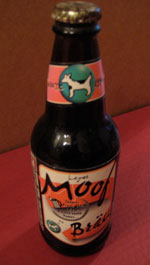

A new “Ironcoder launches today”:http://ironcoder.org/blog/2007/11/02/ironcoder-7-bigger-better-and-uncut/ with a longer hacking period and a nice iPod touch as the prize. I’ve come close to participating in the past and just haven’t had time. Although I don’t expect that to change this week, I’ll be keeping an eye on this one to see what the theme is. It could be a great opportunity to get more hands-on with some of the new Leopard APIs.
Tag Archives: leopard
Wii Transfer 2.5.2 and Leopard
Happy Halloween! “Wii Transfer 2.5.2”:http://www.riverfold.com/software/wiitransfer/ is now available. This is probably one of the most difficult bug fix releases I’ve done. Full changes are in “the release notes”:http://www.riverfold.com/software/wiitransfer/releasenotes/, but the biggest stuff includes fixed Leopard UI glitches and a new 2-pass encoding that should result in much more consistent movie streaming quality. Along the way I touched most of the corners of the product, including many hours of trial-and-error debugging the Flash FLV player component.
While testing Wii Transfer on my TV the other day I had a moment to reflect on how this product has evolved. What started as a one-weekend hack has grown into something quite a bit more complex. It has a few rough edges, sure, but I’m proud of this little app and how I’ve been able to put a simple UI on all these different technologies (embedded web server, HTML/JavaScript/Flash UI, MP3 and FLV conversion, iLife integration, etc). I have a few new features planned and in various stages of development, but I think the just-released 2.5.2 is going to start a trend of refinement; there’s a lot I could do to improve the movie conversion and streaming experience before introducing anything radically new.
So, Leopard. I had originally planned to just wipe my old Leopard seed partition on the MacBook and test the GM, but at the last minute I dove full in and did an upgrade install on my primary machine, the Mac Pro. I have nightly SuperDuper clones just in case, but the upgrade was completely smooth. It’s a great OS foundation and I can’t wait to see what other developers have been working on.
WWDC 2007 in one post
 Along with most of our house, my office is packed up and ready to move this week. The photo to the right is of one of the handful of items in a box labeled “Manton’s desk,” or, if someone else had her way, “Random junk Manton saves to remember the past but which should really be in the trash can.”
It’s unopened Moof beer from WWDC 1996, my first WWDC. At 20 I was too young to drink, but I probably would have saved it anyway. That was back when Apple gave you cool stuff and not just another cheap laptop bag.
This year’s WWDC will probably go down as one of my favorites. The keynote was a bit dull, but it was offset by the reality that Leopard is a mature and usable system. I have been running all my primary apps off of it since last week, including Mail.app, NetNewsWire 3.0, and Xcode.
I couldn’t place the feeling at the time, but now I realize that last week’s sessions were, in a way, relaxing. There was no sense of urgency. Most of the sessions I attended were practical, full of hands-on advice for preparing for Leopard and many applicable to Tiger development as well. I got a lot out of the week, and when I decided to skip out on Friday it didn’t feel like the world would come crashing down because of it.
 Other highlights of WWDC 2007 were away from the sessions: walking Chinatown with “Willie”:http://willie.tumblr.com/ on Sunday in search of the illusive bakery item; hitting the “SF Mac Indie party”:http://sfmacindie.com/ that night and hanging out with fellow developers afterwards; Buzz Andersen’s party Monday, catching up with “Lane”:http://www.monstro.com/ and the host; the “Dan Benjamin”:http://www.hivelogic.com/ annual breakfast; Apple “Design Awards”:http://developer.apple.com/wwdc/ada/ on Tuesday, which had a record number of wins for apps I’ve actually used; accidentally walking into a James Morrison concert at the Apple Store (left photo); being interviewed by Scott McNulty of “TUAW”:http://www.tuaw.com/, though I secretly hope they will decide not to air it; enjoying great Italian with the “VitalSource”:http://www.vitalsource.com/ team on Wednesday before catching the tail end of “CocoaHeads”:http://theocacao.com/document.page/480; plus the Apple Bash and more drinks and discussion Thursday night.
Other highlights of WWDC 2007 were away from the sessions: walking Chinatown with “Willie”:http://willie.tumblr.com/ on Sunday in search of the illusive bakery item; hitting the “SF Mac Indie party”:http://sfmacindie.com/ that night and hanging out with fellow developers afterwards; Buzz Andersen’s party Monday, catching up with “Lane”:http://www.monstro.com/ and the host; the “Dan Benjamin”:http://www.hivelogic.com/ annual breakfast; Apple “Design Awards”:http://developer.apple.com/wwdc/ada/ on Tuesday, which had a record number of wins for apps I’ve actually used; accidentally walking into a James Morrison concert at the Apple Store (left photo); being interviewed by Scott McNulty of “TUAW”:http://www.tuaw.com/, though I secretly hope they will decide not to air it; enjoying great Italian with the “VitalSource”:http://www.vitalsource.com/ team on Wednesday before catching the tail end of “CocoaHeads”:http://theocacao.com/document.page/480; plus the Apple Bash and more drinks and discussion Thursday night.
Like at “SXSW earlier this year”:http://www.manton.org/2007/03/twitterconf.html, Twitter proves both cool and useful. I was lucky enough to meet many of the people on my Twitter friends list for the first time last week.
Of course it wasn’t all fun and games. I sifted through more legitimate Bookshelf bug reports than usual; I was exhausted pretty much every day; and there were a couple developers I had hoped to seek out that I just never made the time to.
All in all, though, a good week and now I’m ready to get back to coding.
Reflecting on WWDC 2006
WWDC 2006 was great. (Yes, it was two weeks ago. Finally making time to blog again.)
I won’t dwell on the announcements too much, but I generally agree with some that there was nothing earth-shattering. We have only seen a part of what Leopard will become (an improved Finder and some unification of window and control types seem inevitable). The most exciting stuff is new APIs for developers, not flashy end-user features.
I had a great time hanging out, catching up with people and meeting new folks too. Buzz Anderson’s “Monday night party”:http://weblog.scifihifi.com/2006/07/23/party-time-excellent/ was excellent.
In addition to the new Leopard goodness (hello Core Animation and Interface Builder), I also came back with new excitement for a side project that I have been working on: an email client. I had stopped active development until hearing what Apple had planned for Mail.app in Leopard, but now I can safely say that they are going in a completely different direction than what I want to focus on.
Threads like “this one on Hawk Wings”:http://www.hawkwings.net/2006/08/21/can-mailapp-cope-with-heavy-loads/ (via “Steven”:http://stevenf.com/mt/2006/08/big_mail.php) also confirm that there are a number of users out there who want the same kind of things I want in an email client. Of course it has to be fast and scale, but I think I have a few twists on the old formula as well.
In San Francisco we also stayed an extra day and visited the Oakland museum, drove up to Point Reyes, and saw a great musical Friday night: “Putnam County Spelling Bee”:http://www.spellingbeethemusical.com/. I recorded a bunch of audio for an upcoming podcast, although not as much as I probably should have. There were a few times in particular I wish I had taken my microphone out.